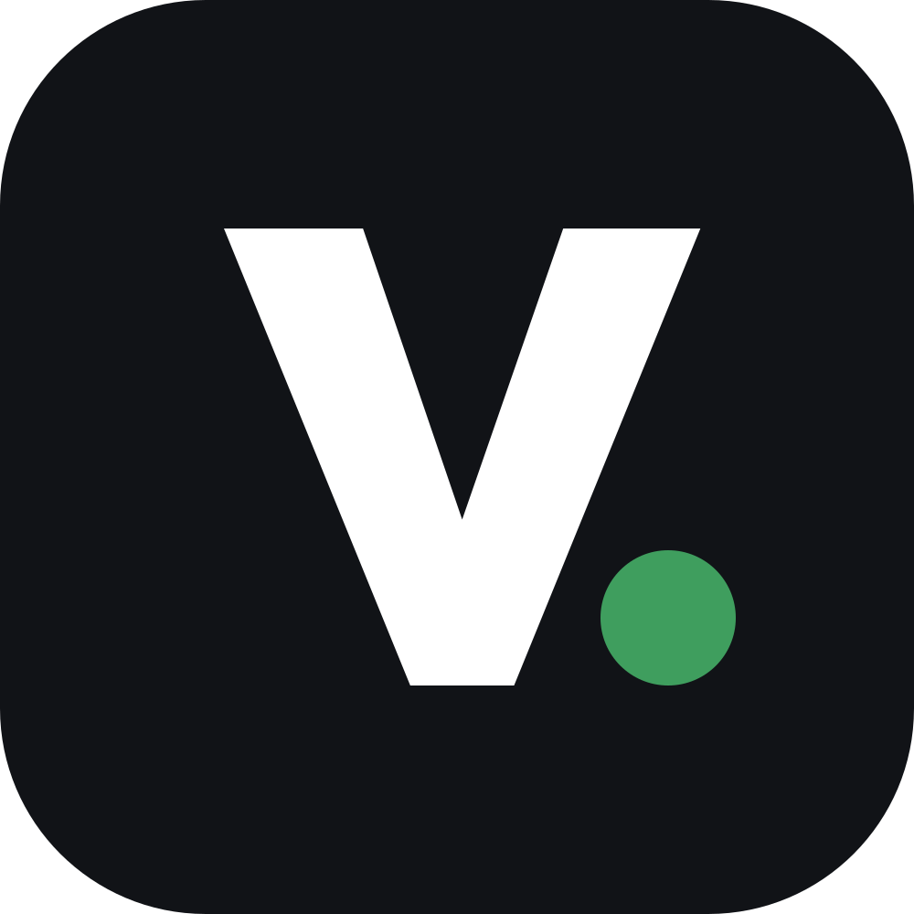
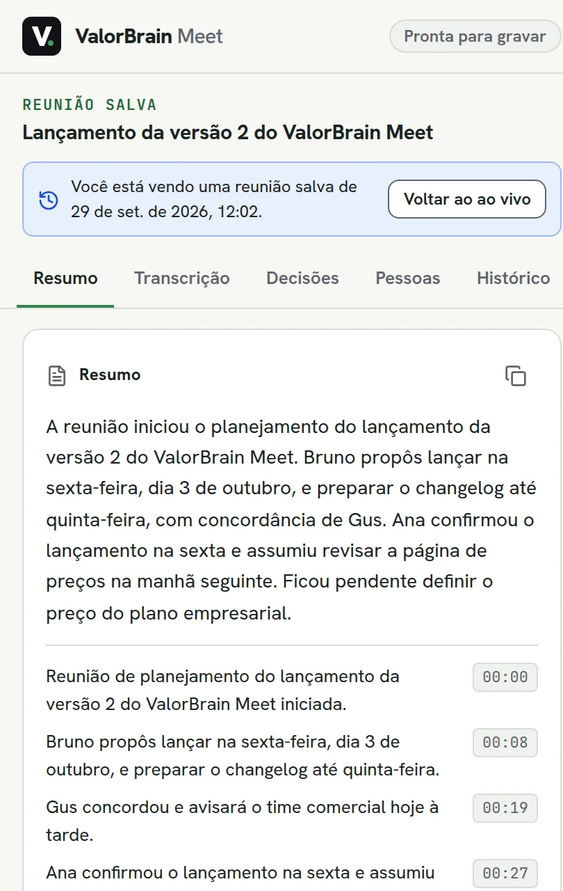
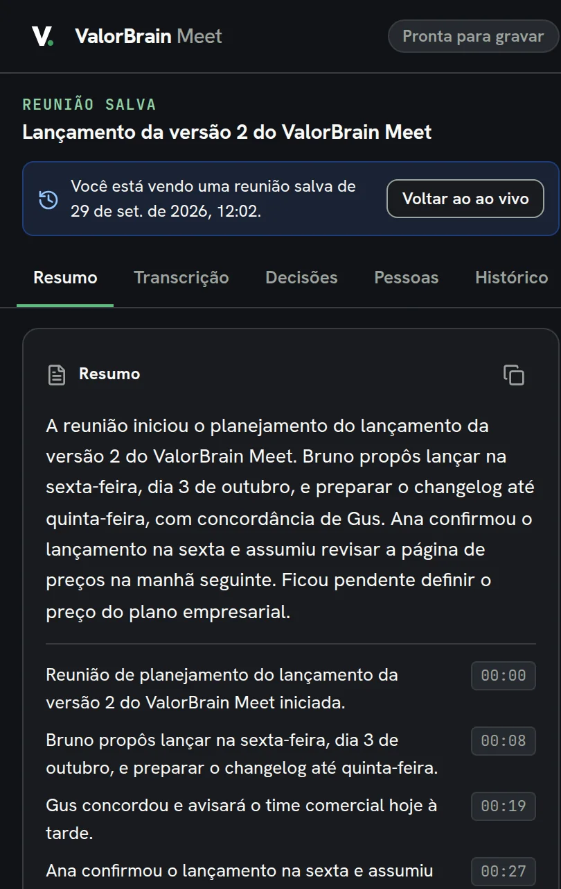
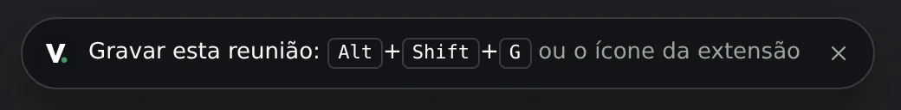
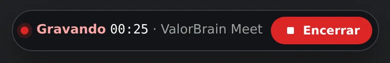
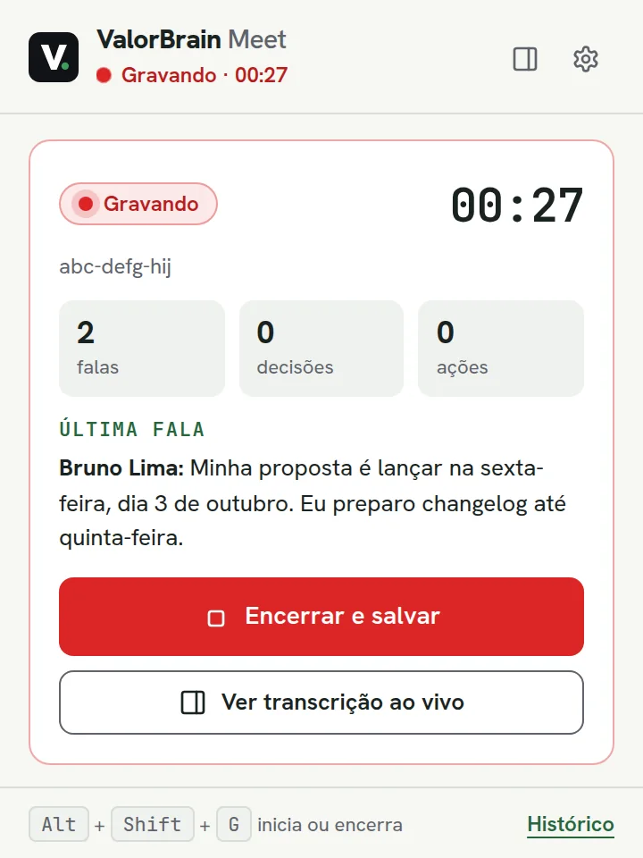

01
Grava sem bot
O áudio da aba do Meet traz as outras pessoas. O microfone traz a sua voz. Ninguém a mais entra na chamada.

ValorBrain MeetO ValorBrain Meet grava o Google Meet direto no Chrome, sem bot na chamada (e o Zoom e o Teams pelo navegador, em teste). Transcreve em português com o vocabulário da sua empresa, resume decisões e próximos passos e guarda tudo na memória do ValorBrain.


Ao encerrar, ou simplesmente ao sair da chamada, a extensão termina o trabalho sozinha e avisa com uma notificação.
O áudio da aba do Meet traz as outras pessoas. O microfone traz a sua voz. Ninguém a mais entra na chamada.
Sua voz e a dos outros separadas, cortadas nas pausas da fala. Os nomes de pessoas, clientes e produtos vêm do ValorBrain, e cada correção aceita fica aprendida para a próxima reunião.
Resumo, decisões, próximos passos com responsável e prazo, assuntos e pontos em aberto, atualizados enquanto a conversa acontece.
A reunião fica salva no navegador e vai para a memória da empresa. Se o envio falhar, nada se perde: o histórico reenvia.
A extensão é carregada direto no Chrome, sem passar pela Chrome Web Store. Na primeira vez, as configurações abrem sozinhas.
{{FOLDER_NAME}}.
~/ValorBrain/valorbrain-meet. O Chrome lê a extensão dessa pasta:
não apague depois.
chrome://extensions, ligue o
Modo do desenvolvedor no canto superior direito e clique em
Carregar sem compactação.
manifest.json.
Se o Chrome ainda não usou o microfone neste Mac, o macOS pergunta na primeira vez. Se você recusou antes, abra Ajustes do Sistema → Privacidade e Segurança → Microfone e ative o Google Chrome.
C:\ValorBrain\valorbrain-meet.
chrome://extensions, ligue o
Modo do desenvolvedor e clique em
Carregar sem compactação.
manifest.json.
Substitua a pasta da extensão pela versão nova, no mesmo lugar e com o mesmo nome, e
clique em
↻ no cartão do ValorBrain Meet em chrome://extensions. O
histórico de reuniões e as configurações continuam.
Carregar de outra pasta cria outra extensão, com o histórico vazio. Se ficarem duas cópias, remova a antiga.
Em Configurações → Primeiros passos, a lista mostra o que falta e leva ao ajuste certo. Quando está tudo certo, ela mostra Tudo pronto.
No Mac e no Windows, escolha
Whisper remoto (whisper.valor.digital) e cole a chave do servidor,
fornecida pela Valor. O Whisper local só funciona com o servidor
rodando no mesmo computador do Chrome. A OpenAI (whisper-1) também
serve.
Cole a chave do Z.ai GLM (GLM Coding Plan), o perfil padrão. Chaves pré-pagas usam Z.ai GLM (API pré-paga), e a OpenAI também funciona. Sem chave, só a transcrição acontece.
Clique em Permitir microfone e aceite o aviso do Chrome. Depois, Testar microfone confirma que o sistema também liberou. Preencha Seu nome nas transcrições: tudo o que vem do seu microfone sai com ele.
Clique em Conectar com ValorBrain, entre com a sua conta e aprove.
As reuniões vão para a memória da sua empresa, na coleção meetings.
Cada item tem um botão de teste: Testar transcrição, Testar resumo e Testar conexão. O Vocabulário da empresa (nomes próprios, produtos, siglas) melhora a transcrição e o resumo.
meet.google.com (ou no Zoom e no Teams pelo
navegador). No canto inferior esquerdo aparece o aviso com o atalho de
gravação.
Avise os participantes de que a reunião está sendo gravada.



| Atalho | Mac | Windows |
|---|---|---|
| Iniciar ou encerrar a gravação | ⌥ ⇧ G | Alt + Shift + G |
| Abrir o painel da reunião | ⌥ ⇧ L | Alt + Shift + L |
| Atualizar o resumo agora | ⌥ ⇧ U | Alt + Shift + U |
Os atalhos mudam em chrome://extensions/shortcuts. O rodapé da janela do
ícone mostra o que está valendo.
Vai em trechos para o provedor de transcrição configurado. Trechos de silêncio são descartados no próprio navegador.
A transcrição vai para o provedor de resumo configurado, junto com o vocabulário da empresa.
Resumo, decisões, próximos passos e transcrição vão para o ValorBrain da sua empresa.
A extensão não tem servidor próprio nem telemetria. Reuniões, chaves e configurações ficam no Chrome deste computador, sem sincronizar com outros. Uma vez por dia, ela consulta este site para saber se há versão nova, sem enviar nada da reunião (dá para desligar nas configurações). Detalhes em docs/PRIVACY.md.
Publicada em {{RELEASE_DATE}}. Um único pacote para macOS e Windows.
{{SHA256}}
shasum -a 256 ~/Downloads/{{ZIP_NAME}}
certutil -hashfile %USERPROFILE%\Downloads\{{ZIP_NAME}} SHA256